UE-E2V: A Dataset Toward Early Violence Recognition in School Environments
ICDM, 2026 (Applied Track)CORE A*
Nha Tran
I am a Lecturer in the Faculty of Information Technology at Ho Chi Minh City University of Education (HCMUE) and a Senior Researcher at VITA Lab. My research focuses on multimodal learning for understanding human behavior and emotion, with the goal of building reliable and trustworthy AI systems for education.
I am also pursuing a Ph.D. in Computer Science at the University of Information Technology, VNU-HCM, under the supervision of Dr. Nguyen Viet Hung and Assoc. Prof. Nguyen Dinh Hien.
Research
I'm interested in computer vision, multimodal learning, and affective computing. Most of my research is about understanding people from visual and multimodal signals, such as emotion in context, student engagement and classroom behavior, and violence in schools, and about making these models trustworthy.
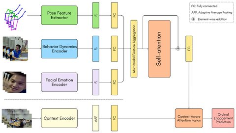
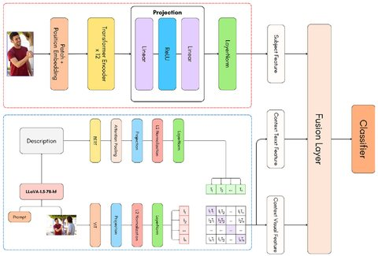
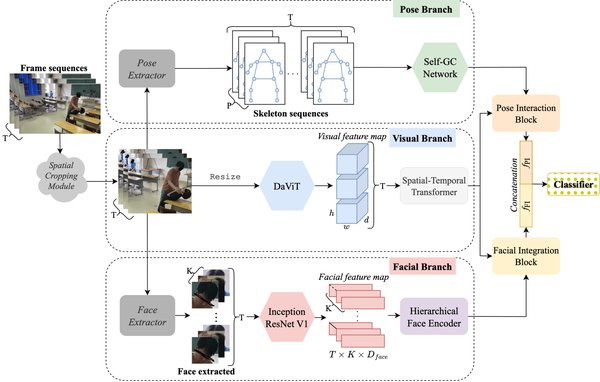
Hierarchical Multimodal Cross-Interactive Learning for School Violence Detection
Applied Soft Computing, 2026Q1
paper
Attention Mechanisms for Context-Aware Emotion Recognition
CCF Transactions on Pervasive Computing and Interaction, 2026Q2
paper
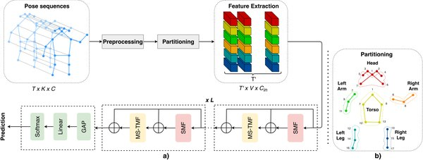
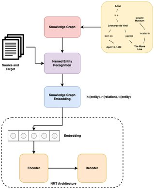
Adapting Knowledge Graph Embedding for Neural Machine Translation
Vietnam Journal of Science and Technology, 2026
paper
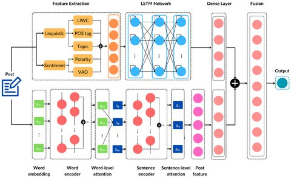
Hybrid Contextual and Sentiment-Based Machine Learning Model for Identifying Depression Risk in Social Media
Expert Systems with Applications, 2025Q1
paper
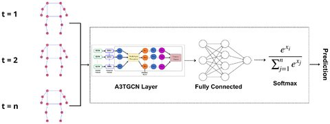
Advancing Violence Detection with Graph-Based Skeleton Motion Analysis
SN Computer Science, 2025Q2
paper
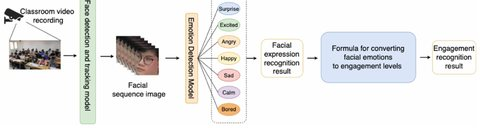
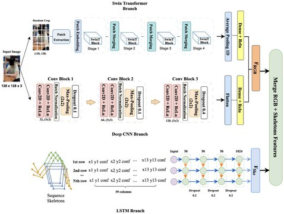
Empowering Classroom Behavior Recognition through Hybrid Spatial-Temporal Feature Fusion
Applied Intelligence, 2025Q2
paper
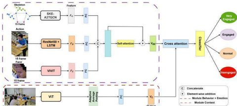
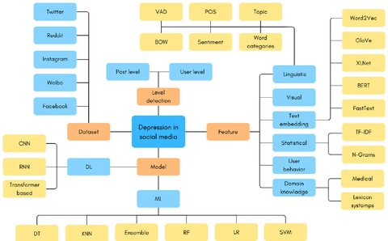
Detecting Signs of Depression on Social Media: A Machine Learning Analysis and Evaluation
Sustainable Futures, 2025Q1
paper
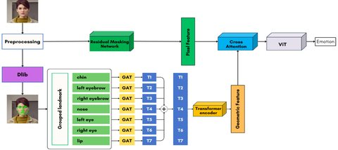
A Graph Attention Network-Enhanced Approach to Facial Expression Recognition Using Hybrid Pixel-Geometry Features
International Journal of Intelligent Engineering & Systems, 2025Q3
pdf
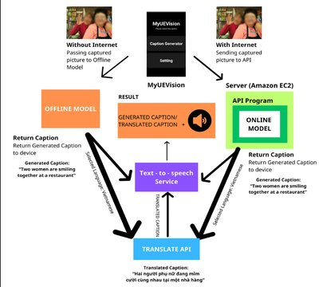
MyUEVision: An Application Generating Image Caption for Assisting Visually Impaired People
Journal of Enabling Technologies, 2024Q3
paper
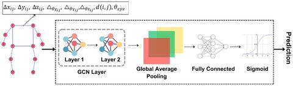
Violence Detection Using Skeleton Data with Graph Convolutional Networks
ISDS, 2024
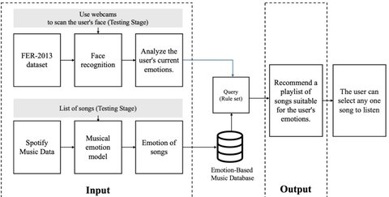
A Model for Song Recommendation Based on Facial Emotion Analysis and Musical Emotion
International Journal of Intelligent Engineering & Systems, 2024Q3
paper/pdf
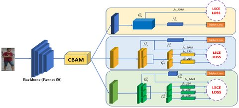
Global-Local Attention with Triplet Loss and Label Smoothed Cross-Entropy for Person Re-Identification
IAES International Journal of Artificial Intelligence, 2023
paper
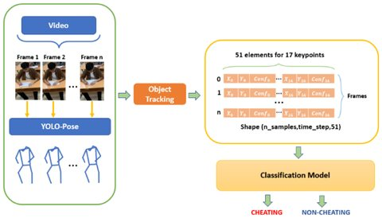
Exploring the Potential of Skeleton and Machine Learning in Classroom Cheating Detection
Indonesian Journal of Electrical Engineering and Computer Science, 2023
paper
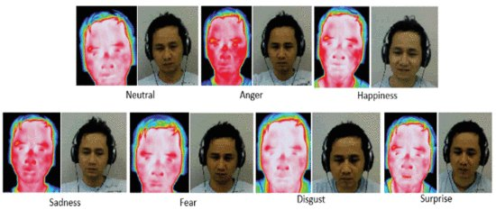
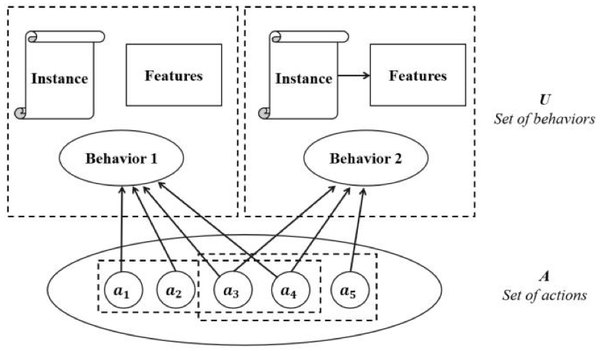
Recognition of Student Behavior through Actions in the Classroom
IAENG International Journal of Computer Science, 2023Q3
pdf
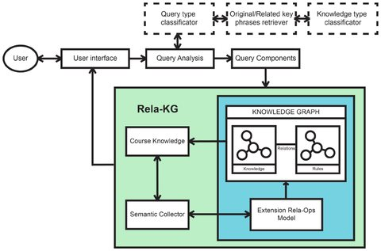
Knowledge Management for Information Querying System in Education via the Combination of Rela-Ops Model and Knowledge Graph
Journal of Cases on Information Technology, 2023
paper
Teaching
Lecturer, HCMUE, 2021–present: Machine Learning, Computer Vision, Recommender Systems, Software Engineering, Application Development.